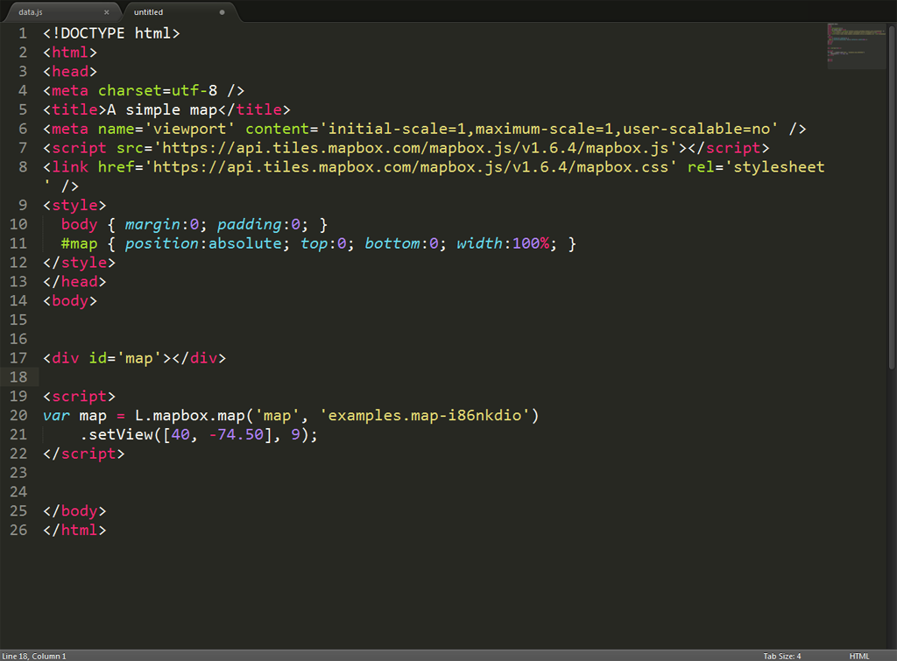

bostonography
bostonography
Web Maps 101
Nell Conti, Nate Irwin, and Mamata AkellaFIRST: Thanks to Maptime Boston and the rest of the larger Maptime community for much of this material!
#webmaptimeFollow along!
http://maptimeboston.github.io/web-maps-101
What is a web map?
Web map often implies a map that is not simply on the web, but rather one that is powered by the web.
A digital map is on a computer, but may not be accessible by internet, and is relatively static if it is.
A web map depends on the internet. It is usually interactive and not always self-contained.
Where did this all start?
MapQuest ruled the early days of web maps beginning in 1996
Enter Google, 2005
Google Maps pioneered what is now sometimes called a slippy map
So how does a "slippy map" work?
A slippy map is usually made of tiles.
Tiles
Pre-rendered map images that fit seamlessly together in geographic space.
Tiles are usually pre-rendered raster images, although vector tiles are on the rise.
All (most) tiles are created equal.
openwhatevermap.orgMap tiles are 256x256 pixels and organized based on coordinates (x,y) and zoom levels (z).
Zoom Level
A predefined scale at which a map is rendered. Ranges from 0 (entire world) to 21 (individual building level).

Number of tiles at zoom level z:
2z x 2z = 4z
Map tiles are just images on the web, so you can link to them individually.
Tiled web maps use the Mercator projection.
WikipediaMercator's map was designed for marine navigation. Lines of constant bearing are straight.
At a local scale, this means that shape and direction are preserved.

Distortion.
That covers it, right?
not yet.
Web maps are more than just tiles.
Dynamic and interactive feature layers are the important other half of many web maps.
Tiles are typically raster, non-interactive*, used as a base layer
Base Layer
A map that provides geographic context to help support a wide variety of feature layers.
(aka basemap or base map)
Feature layers are typically interactive, vector, represent the map's salient data
Feature Layer
Themes of information overlaid on a base layer that help tell a story.
(aka overlay)
How does all this fit together?
This is cool!
So where do I start?

Web maps are still maps so the overarching requirement is that they are created with the purpose and user in mind.
All good maps tell stories.
What is the story you are trying to tell?
Cartographers do this.
Who is your audience?

Communication Tool vs.
Exploration Tool
Data Considerations
Important
Spend the time upfront working on your data!
Interaction
What layers can you interact with?
What layers won't change?
Will data update in real time?
bostonographyWhat format will you keep your data in?
We mentioned tiles...
Do you want a custom basemap?
Or can you use an existing one?
Hosting
Where are you going to put your map?
How much money do you have?

Coding

Chrome
Dev Tools
Other Awesome
Learning Sites
w3schools
Codecademy
CodeSchool
Lynda.com
JavaScript.is(Sexy)
What tools can I use to get started?
CartoDB
Mapbox
Leaflet
TileMill
Mapbox Studio
OpenLayers
Mapquest Javascript APIS
Google Javascript APIS
Where do I get data?
Lots of places...
These are free. And open.
Natural Earth
OpenStreetMap Extracts
U.S. Census Bureau
Your own data! Geocoding
How can I manipulate and manage my data?
Free and Open Source GIS Software
QGIS

How do I make my data an overlay?
What about the basemap?
Design in TileMill or Mapbox Studio
Host on Mapbox or on your own:
TileServer.php, TileStache, TileCache, TileStream,
mbtiles-server, mod_tile
Or just use nice existing tiles!
OpenStreetMap, Stamen,
Mapbox, MapQuest
What is Git, Github,
and GeoJSON?
Learn Git, Github, and GeoJSON
Find Examples!
Open them, paste them, change things!
GIS Collective Tutorials
Leaflet Tutorials
MapboxJS Examples
OpenLayers Tutorials
Let's build a simple web map!
(Thanks to Lyzi Diamond for the content)
First things first:
How do we put maps on the web?
HTML!
HTML
The language of websites.
When we think of web maps, we think about interactivity like...
Google Maps!
We want interactivity.
We want people to engage with our web maps.
How do we make interactivity happen on the web?
JavaScript!
How does interactivity happen on web maps?
Leaflet!
Leaflet
An open-source JavaScript library for interactive web maps.
Read more about Leaflet at:
http://leafletjs.com/
Ok, let's REALLY build a simple web map!
Find a text editor!
Notepad ++
Brackets
Sublime Text
Download the starter file
LINK